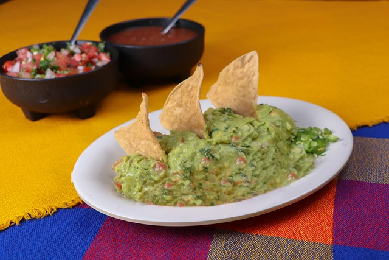

Home
Guacamole

Description
Guacamole is an avocado-based dip or spread that originated in Mexico. It's typically made with mashed avocado and lime juice, then seasoned with salt and cilantro.
Guacamole often contains tomatoes and onions.
Serve this guacamole with tortilla chips, crackers, or fresh vegetables for dipping. You can also spread it on toast, use it as a hamburger or sandwich topping, or dollop it onto a baked potato.
Ingredients
- 3 avocados - peeled, pitted, and mashed
- 1 lime, juiced
- 1 teaspoon salt
- 2 roma (plum) tomatoes, diced
- ½ cup diced onion
- 3 tablespoons chopped fresh cilantro
- 1 teaspoon minced garlic
- 1 pinch ground cayenne pepper (Optional)
Steps
- Gather all ingredients.
- Mash avocados, lime juice, and salt together in a medium bowl; mix in tomatoes, onion, cilantro, and garlic.
- Stir in cayenne pepper. Serve immediately, or cover and refrigerate for 1 hour for improved flavor.